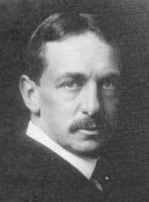
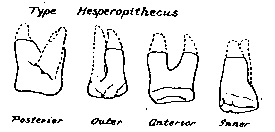
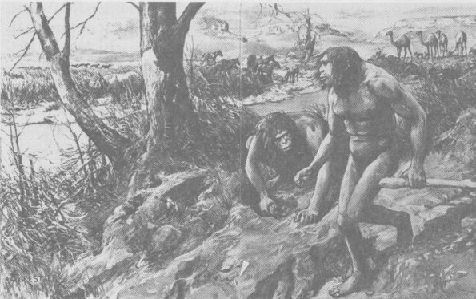

Arguments créationnistes : l'homme du Nebraska
L'homme du Nebraska a été nommé en 1922 à partir d'une dent ressemblant à celle d'un humain qui avait été trouvée au Nebraska. Selon la version racontée par les créationnistes, les évolutionnistes ont utilisé une seule dent pour construire une espèce entière d'homme primitif, complète avec des illustrations de lui et de sa famille, avant que de nouvelles fouilles ne révèlent que la dent appartenait à un peccary, un animal similaire à (et étroitement apparenté aux) porcs.
|
 Henry Fairfield Osborn |
L'histoire vraie est beaucoup plus complexe (Wolf et Mellett 1985; Gould 1991). Harold Cook, un éleveur et géologue du Nebraska, avait trouvé la dent en 1917, et en 1922, il l'envoya à Henry Fairfield Osborn, un paléontologue et président du Musée d'Histoire Naturelle de l'Amérique. Osborn l'identifia comme un singe et publia rapidement un article l'identifiant comme une nouvelle espèce, qu'il nomma Hesperopithecus haroldcookii.
|
 La dent de l'homme du Nebraska, telle qu'elle est représentée dans le Illustrated London News, 24 juin 1922 |
Le dessin imaginaire de l'homme du Nebraska auquel les créationnistes font invariablement référence est l'œuvre d'un illustrateur collaborant avec le scientifique Grafton Elliot Smith, et a été réalisé pour un magazine populaire britannique, et non pour une publication scientifique. Peu, voire aucun autre scientifique n'a affirmé que l'homme du Nebraska était un ancêtre humain. Quelques-uns, y compris Osborn et ses collègues, l'ont identifié uniquement comme un primate avancé d'une certaine sorte. Osborn, en fait, a spécifiquement évité de faire des affirmations extravagantes sur Hesperopithecus étant un homme-singe ou un ancêtre humain :
« Je n'ai pas affirmé que Hesperopithecus était soit un Homme-singe, soit dans la lignée directe de l'ascendance humaine, car je considère qu'il est tout à fait possible que nous puissions découvrir des singes anthropoïdes (Simiidae) dont les dents imitent très étroitement celles de l'homme (Hominidae), ... »Most other scientists were skeptical even of the more modest claim that the Hesperopithecus tooth belonged to a primate. It is simply not true that Nebraska Man was widely accepted as an ape-man, or even as an ape, by scientists, and its effect upon the scientific thinking of the time was negligible. For example, in his two-volume book Origines humaines published during what was supposedly the heyday of Nebraska Man (1924), George MacCurdy dismissed Nebraska Man in a single footnote:« Tant que nous n'aurons pas obtenu davantage de dents, ou de parties du crâne ou du squelette, nous ne pourrons pas être certains si Hesperopithecus est un membre des Simiidae ou des Hominidae. » (Osborn 1922)
« En 1920 [sic], Osborn a décrit deux molaires du Pliocène du Nebraska ; il a attribué ces dents à un primate anthropoïde auquel il a donné le nom Hesperopithecus. Les dents ne sont pas bien conservées, de sorte que la validité de la détermination d'Osborn n'a pas encore été généralement acceptée. »
Gregory a confirmé cela dans son article qui a correctement identifié la dent :
Le monde scientifique, cependant, était loin d'accepter sans preuves supplémentaires la validité de la conclusion du professeur Osborn selon laquelle la dent fossile du Nebraska représentait soit une dent humaine, soit une dent d'anthropoïde. (Gregory 1927)
Identifier la dent comme appartenant à un primate supérieur n'était pas aussi stupide qu'il y paraît. Les dents molaires du porc et du tatou sont extrêmement similaires à celles des humains, et le spécimen était usé, ce qui rendait l'identification encore plus difficile.

L'infâme illustration de l'homme du Nebraska réalisée pour le Illustrated London News par Amedee Forestier
Les créationnistes ridiculisent souvent l'illustration de l'homme du Nebraska, représentant deux créatures humanoïdes mais extrêmement bestiales, réalisée par Amedee Forestier pour le Illustrated London News (Smith 1922). Ils ont raison de souligner qu'un animal ne peut pas être reconstruit à partir d'une seule dent. Mais le dessin n'était pas une reconstruction et n'était jamais destiné, ou prétendu, à être précis ou scientifique, étant basé davantage sur le fossile de l'homme de Java que sur la dent. Smith a souligné (la citation suivante figurait à la fois dans le texte principal et sous le dessin) sa nature spéculative :
« M. Forestier a réalisé un croquis remarquable pour transmettre une idée des possibilités suggérées par cette découverte. Comme nous ne savons rien de la forme de la créature, sa reconstruction n'est que l'expression du génie imaginatif brillant d'un artiste. Mais si, comme le suggèrent les particularités de la dent, Hesperopithecus était un ancêtre primitif de Pithecanthropus, il aurait pu être une créature telle que M. Forestier l'a représentée. » (Smith 1922, insistance ajoutée)Osborn, who had named Hesperopithecus, was less impressed with Forestier's artistic efforts, and remarked that
« Un tel dessin ou « reconstruction » serait sans doute une simple invention de l'imagination, sans aucune valeur scientifique, et incontestablement inexact. » (cité dans Wolf et Mellett 1985)Smith may have been the only major scientist who was enthusiastic about Nebraska Man's hominid status, but even he, in his 1927 book L'évolution de l'homme, was much more cautious than he had been in the ILN article. Although he stated that
« Je pense que la balance des probabilités penne en faveur de l'opinion selon laquelle la dent trouvée dans les couches du Pliocène du Nebraska pourrait avoir appartenu à un membre primitif de la Famille humaine » (Smith 1927),Smith also recognized that Hesperopithecus was "questionable", and admitted that
« La suggestion selon laquelle la dent du Nebraska (Hesperopithecus) pourrait éventuellement indiquer l'existence de l'humanité au début du Pliocène est, comme je l'ai expliqué dans l'Avant-propos, encore entièrement provisoire. L'affirmation selon laquelle de véritables hommes existaient au Pliocène et au Miocène doit être considérée comme une simple hypothèse non encore étayée par aucune preuve adéquate. » (Smith 1927)
Les créationnistes affirment souvent que l'homme du Nebraska a été utilisé comme preuve de l'évolution lors du procès Scopes sur les singes en 1925, mais cette affirmation est apocryphe. Aucune preuve scientifique n'a été présentée lors du procès. (Certaines preuves ont été lues dans le procès-verbal, mais même celles-ci ne faisaient pas référence à l'homme du Nebraska.)
Il n'est pas vrai non plus, comme l'a dit Ian Taylor (1995), que le retrait de l'identification initiale n'a pas été rendu public et n'a jamais fait la une. Bowden (1981) indique également que « Peu de publicité a été faite à l'erreur découverte ». En fait, The New York Times et The Times de Londres ont tous deux annoncé la nouvelle (le NYT l'a mis en page une), et les deux ont également publié des éditoriaux à ce sujet (Wolf et Mellett 1985). L'autre affirmation de Taylor, selon laquelle le retrait a été annoncé dans la littérature scientifique en seulement quatre lignes dans les pages de fond de Nature, est presque correcte (il s'agissait de 16 lignes) mais hautement trompeuse, car elle dissimule le fait qu'un article d'une page et demie retirant l'affirmation a été publié dans la prestigieuse revue Science (Gregory 1927). De plus, Taylor aurait dû connaître cet article, car il était référencé par l'élément de Nature auquel il a fait référence.
L'Homme du Nebraska ne devrait pas être considéré comme une honte pour la science. Les scientifiques impliqués se sont trompés et ont été quelque peu imprudents, mais pas malhonnêtes. L'épisode entier a en réalité été un excellent exemple du processus scientifique fonctionnant à son meilleur. Face à une identification problématique, les scientifiques ont mené des enquêtes supplémentaires, ont trouvé des données qui ont infirmé leurs idées antérieures et les ont rapidement abandonnées (un contraste marqué avec l'approche créationniste).
Références
Gregory W.K. (1927): Hesperopithecus apparently not an ape nor a man. Science, 66:579-81. (identified the Nebraska Man tooth as belonging to a peccary)Gould S.J. (1991) : Un essai sur un rôti de porc. Dans Bully for brontosaurus. (pp. 432-47). New York : W.W.Norton.
Osborn H.F. (1922) : Hesperopithecus, le primate anthropoïde du Nebraska occidental. Nature, 110:281-3.
Smith G.E. (1922) : Hesperopithecus : l'homme-singe du monde occidental. Illustrated London News, 160 : 942-4.
Smith G.E. (1927) : L'évolution de l'homme. 2e éd. Londres : Oxford University Press.
Taylor I. (1995) : L'homme du Nebraska va en justice. Science, Écriture et Salut (émission de radio de l'ICR), 8 juillet :
Wolf J. et Mellett J.S. (1985) : Le rôle de « l'homme du Nebraska » dans le débat créationnisme-évolution. Creation/Evolution, Numéro 16 : 31-43. (la meilleure référence sur l'épisode de l'homme du Nebraska)
Merci à Chris Nedin pour avoir obtenu l'article difficile à trouver du Illustrated London News sur l'homme du Nebraska.
Les manuels continuent-ils d'utiliser l'homme du Nebraska ?, par Mike Hopkins
Articles créationnistes
Premiers Hommes Fossiles : Homme du NebraskaL'homme du Nebraska revisité, par Ian Taylor
Cette page fait partie du FAQ sur les hominidés fossiles de l'Archive TalkOrigins.
Page d'accueil |
Espèces |
Fossiles |
Créationnisme |
Lecture |
Références
Illustrations |
Nouveautés |
Retour d'information |
Recherche |
Liens |
Fiction
http://www.talkorigins.org/faqs/homs/a_nebraska.html, 30/04/2003
Copyright © Jim Foley
|| Envoyez-moi un email